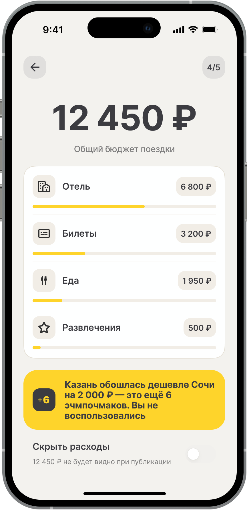

Валидация
Немодерируемые задачные тесты через Pathway: 8 участников на каждый из 3 сценариев, 24 сессии суммарно. Прототип в Figma с рабочими переходами.
Смотреть артефакт в Figma →Методология
Формат: немодерируемые задачные сессии, Pathway.
Платформа: интерактивный прототип Figma с рабочими переходами.
Участники: 8 человек на сценарий, 3 сценария, 24 сессии суммарно.
Ограничение: немодерируемый формат не дает записей экрана. Точки трения воссозданы по времени выполнения и паттернам ответов.
Сценарий 1: Прохождение карусели
Задача: открыть summary и дойти до конца карусели без подсказок.
| Метрика | Цель | Результат |
|---|---|---|
| Доходимость до слайда 5 | 100% | 7/8 (88%) |
| Сложность (1–5) | ≤ 2 | 1,8 ✅ |
| Время прохождения | — | 18–187 сек |
Один участник не дошел до слайда 5: предположительно ограничение платформы, не проблема дизайна. Дополнительный сигнал: один участник поднял тему геолокационного трекинга. Стоит упомянуть о трекинге в онбординге.
Решение: изменений в дизайн карусели не вносить.
Сценарий 2: Скрытие финансовой информации
Задача: «Скрой финансовую информацию в summary перед публикацией». Формулировка через цель нужна, чтобы увидеть, находит ли пользователь нужный инструмент самостоятельно.
| Метрика | Цель | Результат |
|---|---|---|
| Завершили задачу | — | 7/8 (88%) |
| Время < 30 сек | 100% | 5/8 (62%) ⚠️ |
| Медианное время | — | 22 сек ✅ |
| Нашли тоггл с первой попытки | — | 7/8 (88%) ✅ |
Трое участников, вероятно, искали кнопку напрямую на слайде с бюджетом, а не в edit-экране: отсюда задержка. 62% уложились в 30 секунд при цели 100%, но медиана 22 сек говорит, что большинство справились быстро.
Решение: дублировать кнопку «Скрыть расходы» прямо на слайде с бюджетом.

Сценарий 3: Шеринг в Telegram
Задача: «Опубликуй summary в свою story в Telegram».
| Метрика | Цель | Результат |
|---|---|---|
| Завершили задачу | 5/8 | 8/8 (100%) ✅ |
| Медианное время | — | 11 сек |
| Ожидания оправдались | — | 6/8 (75%) |
| Сложность 5/5 | 0% | 3/8 (38%) ⚠️ |
Лучший результат по завершаемости из трех сценариев, но трое поставили максимальную сложность. Возможная причина: участники ожидали кастомный экран выбора канала, а получили нативный share sheet iOS.
Решение: A/B тест кастомного экрана выбора канала против нативного share sheet.
Принятые дизайн-решения
| Изменение | Источник |
|---|---|
| Дублировать «Скрыть расходы» на слайде с бюджетом | Сценарий 2: 3/8 искали кнопку напрямую на слайде, не в edit-экране |
| A/B тест: кастомный выбор канала vs нативный share sheet | Сценарий 3: несовпадение ментальной модели у 3/8 участников |